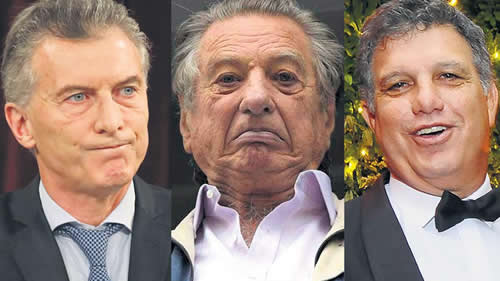

Real Chubut - Agencia de Noticias


El tiro por la culata

Franco y Gianfranco Macri, padre y hermano del Presidente, fueron citados a indagatoria en una derivación de la causa por las fotocopias de los cuadernos. Están acusados de haber pagado coimas para renovar contratos de peaje. Preocupación oficial: el propio Mauricio encabezaba al grupo familiar en los años investigados
El padre y el hermano del Presidente, Franco y Gianfranco Macri, tendrán que presentarse el jueves a declarar como sospechosos de haber pagado coimas al gobierno kirchnerista a cambio de la renovación de contratos de peajes en autopistas. Mauricio Macri no figura en el llamado a indagatoria aunque era el alma mater del grupo empresario propietario de Autopistas del Sol. En casi todo el período en el que supuestamente se pagaron las coimas, de 2003 a 2007, Franco Macri había cedido las acciones a sus hijos. En Tribunales está instalado el rumor de que estos movimientos en la causa por las fotocopias de los cuadernos tienen como trasfondo el “golpe de estado” que destituyó de su cargo al ex presidente de la Corte, Ricardo Lorenzetti. “Hay vendetta”, afirman.
El juez Claudio Bonadio no sólo convocó a indagatoria a Franco y Gianfranco Macri sino a buena parte de los empresarios de concesiones viales. Entre ellos figura otro referente de los empresarios argentinos, Eduardo Eurnekian, citado para el 19 de diciembre.
La base de la acusación es la declaración del arrepentido Claudio Uberti, ex titular del Organo de Control de Conceciones Viales (Occovi). Bajo amenaza de ir a la cárcel, Uberti dijo que todos los concesionarios juntaban plata mensualmente para retener las concesiones y que entre 2003 y 2007, cuando Uberti se fue despedido por el caso Antonini Wilson, le entregaron 150.000 dólares. El ex funcionario dijo ante el fiscal Carlos Stornelli que le llevaba el dinero a Julio De Vido y en algunas oportunidades a la Casa Rosada, directamente a Néstor Kirchner. No aportó evidencias. Y ni a los Kirchner ni a De Vido se le encontraron bienes no declarados ni cuentas ni sociedades ocultas.
Uberti le dio color a su declaración como arrepentido. Sostuvo que en 2003 le ordenaron hacer nuevas licitaciones de las concesiones viales para lo cual armó un equipo de 50 personas. Pero luego, fue supuestamente citado por De Vido quien le dijo: “el presidente no va a firmar los contratos ni en pedo. Vos hiciste las cosas demasiado bien y no arreglaste con la gente. Andá a decirles que pongan. Te van a llorar, pero deciles que si no ponen el presidente no firma”.
La conclusión –siempre según Uberti– fue que los empresarios decidieron pagar unos 150.000 dólares mensuales que eran entregados a Uberti por el titular de Vial3 S.A., Miguel Aznar. Este también se presentó en el expediente y aceptó declarar como imputado colaborador, arrepentido. Dijo que nunca juntó dinero de los empresarios y que no hubo ningún tipo de pedido a cambio de la firma de Néstor Kirchner de los contratos, ya que el acto se realizó el 31 de octubre de 2003. Recién varios meses después, Uberti empezó a pedir que le paguen amenazando con sancionar a las empresas por los problemas técnicos en las autopistas. Aznar reconoce que su empresa le pagó 25.000 dólares durante varios meses a Uberti, pero que no le consta que el dinero haya ido hacia arriba. El ex funcionario alardeaba que estaba en el Tango 01 volviendo de Venezuela “pero yo no sabía si las cosas que me decían eran reales. En 2005 dejamos de pagarle”. Uberti mencionó que hubo un pago de 500.000 dólares porque se otorgó a Shell una estación de servicio en el corredor vial 3, el que explotaba Vial3 S.A. Aznar declaró que ese pago no existió, que la cifra es imposible porque el total que pagó Shell fue 1.500.000 dólares, a lo que había que descontarle el IVA y otros impuestos, por lo que significaba que más de la mitad de los ingresos fueron para Uberti. “Eso no ocurrió” —dijo Aznar—, que sostuvo que el dinero total ingresó a su empresa.
El patriarca de los Macri tiene ahora 88 años y está la versión de que, por su estado de salud, no está en condiciones de declarar. En los últimos años, Franco jugó el papel de sacarle de encima causas judiciales a sus hijos. Por ejemplo, presentó una declaración en la causa de Panamá Papers diciendo que el dueño de las off shore no declaradas por el presidente y que aparecieron en esa investigación periodística eran de su propiedad y que en verdad Mauricio Macri no tenía responsabilidad alguna. En esa ocasión —noviembre de 2016— lo representó el poderoso estudio Anzorreguy. El hermano Gianfranco cobró notoriedad porque entró al blanqueo con 622 millones de pesos o sea 35 millones de dólares de 2016. Ese hecho dejó expuesto al presidente Macri por varios motivos, pero sobre todo porque lo blanqueado por Gianfranco fue cinco veces más que el patrimonio que declaró Mauricio. Es llamativo porque el líder del clan familiar era –y es– el actual presidente y no su hermano, por lo que resulta extraño que Gianfranco sea tanto más rico que Mauricio.
Respecto de las concesiones viales, Franco y Gianfranco deberán responder sobre el Acceso Norte y el Acceso Oeste, en las que participaban, en algún caso con la empresa española del titular del Real Madrid, Florentino Pérez, tal como consignó PáginaI12 este fin de semana.
Los memoriosos afirman que cuando Uberti dice que recibió las coimas, a fines de 2003 o en 2004, Franco Macri ya no estaba en las empresas ya que había cedido las acciones a sus hijos. Por eso resulta asombroso que lo llamen a declarar y con tanto apuro. Tampoco Gianfranco tenía un papel protagónico, dado que el liderazgo en los negocios lo tenía el actual mandatario.
Ayer fue un día de rumores en Comodoro Py. A todos les llamó la atención semejante llamado a indagatoria, en pleno diciembre, cuando los magistrados están más bien redondeando las causas que ya tienen en marcha. La versión más extendida en el edificio de Retiro es que se trata de una consecuencia de la maniobra que hubo en la Corte Suprema y que significó, de manera sorpresiva, el desplazamiento de Ricardo Lorenzetti de la presidencia. Esa jugada –según opinión generalizada– se armó en la Casa Rosada y no faltó quien en su momento habló de juramentos de venganza. Ese es el río que suena.
Fuente: Pagina 12